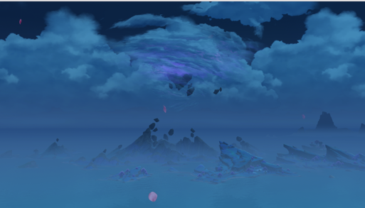
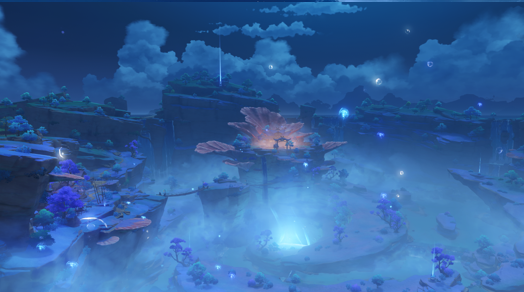

| 首页 | 蒙德 | 璃月 | 稻妻 | 须弥 | 枫丹 |
|---|---|---|---|---|---|
| |
|
|
|
|
|
| 永恒的国度——稻妻 | ||
| 地理环境：稻妻是位于提瓦特大陆东部的群岛国家，以其壮丽的自然风光和独特的岛国风情 而闻名。这里有着被雷电环绕的海域、红枫与绯樱点缀的岛屿、高耸的断崖和幽深的山林。 | ||
| 文化特色：稻妻的文化深受其岛国地理和雷电元素的影响，融合了日本传统和幻想元素。 这里的建筑风格独特，既有传统的神社和庭院，也有现代化的城郭和街道。 | ||
| 雷神雷电将军：稻妻的统治者是雷电将军，也被称为“雷电影”。她以强大的雷电之力和 对“永恒”的追求而著称，管理着这片充满神秘和力量的土地。 | ||
 |
||
| 自然奇观：稻妻地区拥有许多自然奇观，如被雷电环绕的海域、神秘的山林和幽深的洞穴， 为旅行者们提供了丰富的探索内容 | ||
|  | ||
|  |